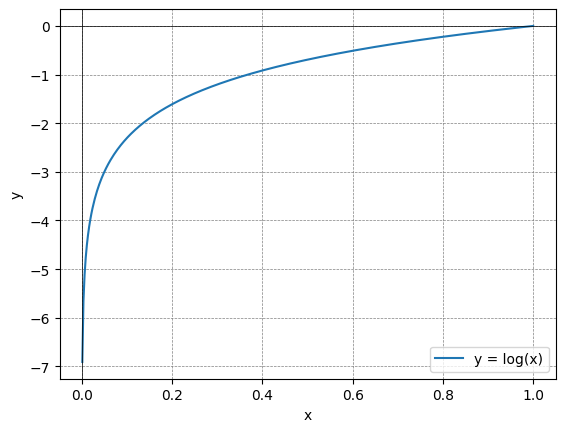
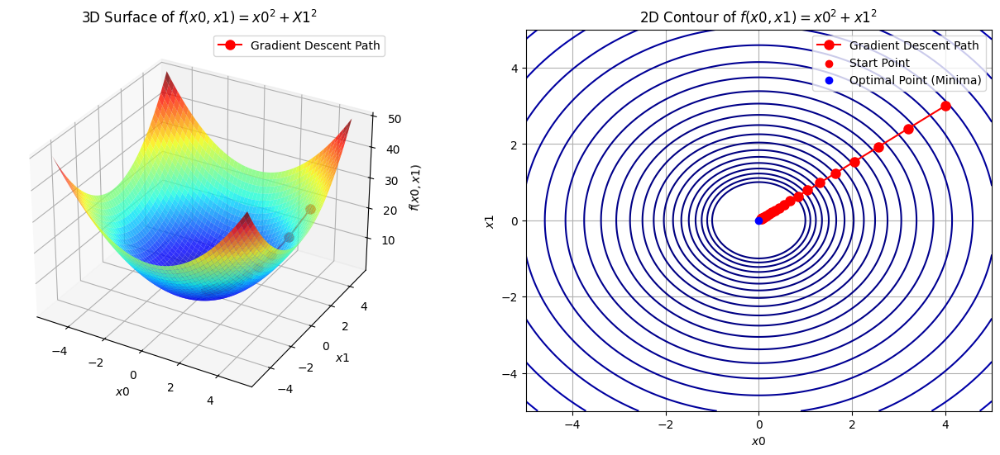
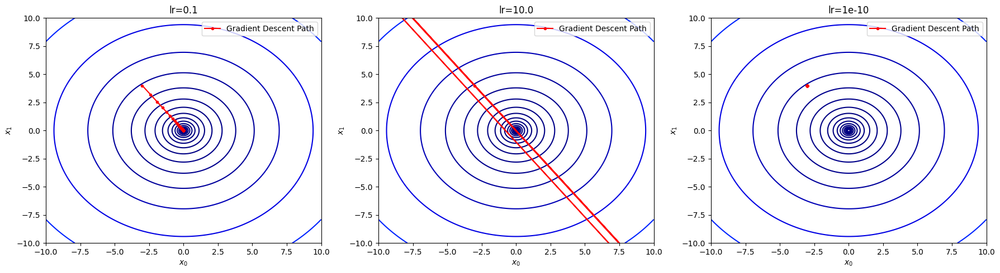

flowchart LR input[input] --"forward" ---> loss[loss] loss[loss] --"backward" ---> input[input]
6 Learning process
인공싱경망은 학습과 추론 과정으로 구분할 수 있습니다. 인공신경망을 만든다(?)는 관점은 학습을 의미하며 이는 신경망의 출력값과 실제값의 차이를 줄이는 방향으로 신경망을 이루는 가중치(매개변수)를 찾는 과정이라고 단순히 말할 수 있습니다.
여기서 중요한 것은 인간이 매개변수를 설정하지 않고 기계가 스스로 찾는 다는 점에서 매우 의미가 있습니다.
퍼셉트론에서 진리표의 매개변수는 3개에 불과하여 수작업이 가능했지만 매개변수가 1000개라고 하면 수작업이 불가할 것 입니다. 이 과정을 기계가 스스로 학습하여 해결한다니 매우 놀라운 일입니다.
그리고 학습을 통해 매개변수를 기계가 찾는 다는 것은 주어진 데이터의 특성(Features)를 추출하여 특정 패턴을 찾는 것입니다. 물론 사람의 개입없이 말입니다.
우리가 집중할 것은 이러환 과정이 어떻게 구현되는가 입니다. 그래서 다음의 주제에 대하여 집중하여 살펴보도록 하겠습니다.
- 출력값과 실제값을 비교하여 정확도를 측정하는 손실함수(loss function)
- 손실값을 활용한 가중치 갱신을 위한 경사하강법(gradient descent)
- pre-requisite: 수치미분을 통한 기울기 산출
- applicatoin: 학습률(learing rate \eta: \omega = \omega - \eta\frac{\partial{f}}{\partial{\omega}})을 이용한 매개변수 갱신
손실함수는 추론(?)에 해당하는 순전파 과정에서 그 정확도를 산출하기 위한 내용이고, 경사하강법은 산출된 Loss를 입력까지의 역전파하여 매개변수인 가중치를 업데이트 하는 과정에 대한 내용으로 단순하게 이해할 수 있고 자세한 사항을 아래에 섦영하도로고 하겠습니다.
6.1 Loss Function
손실함수는 인공신경에 입력되어 산출되는 값과 실제 값을 비교하여 정확도를 측정하는 하나의 지표라고 할 수 있다. ANN은 이러한 지표를 기준으로 최적의 가중치와 편향을 탐색하는 방식으로 학습을 진행합니다.
손실함수로는 일반적으로 오차제곱합(SSE, sum of squares for error)과 교차 엔트로피 오차(CEE, cross entropy error)를 사용합니다.
6.1.1 SSE(sum of squares for error)
오차제곱합(Equation 6.1 )은 신경말의 출력값(y_k)과 실제값(t_k) 사이의 차이인 오차를 계산하고 이 오차를 제곱하여 모두 더한 값을 말하며 이 값이 작아질 수록 모델이 더 좋은 예측능력을 보유한다고 판단합니다.
E = \frac{1}{2}\sum^{}_{k}(y_k - t_k)^2 \tag{6.1}
오차제곱합의 작동원리를 이해하기 위하여 임의로 원-핫 인코딩된 레이블(t_k)과 임의로 소프트맥수 합수의 출력값(y_k)을 생성하여 코드로 구현해 보겠습니다.1
1 CEE에서도 동일한 예제를 사용 예정
# 정답 레이블은 2
t = [0, 0, 1, 0, 0, 0, 0, 0, 0, 0]
def sum_squres_error(y, t):
return 0.5 * np.sum((y-t)**2)
# 예1: 2일 확률이 제일 높음(60%)
y = [0.1, 0.05, 0.6, 0.0, 0.05, 0.1, 0.0, 0.1, 0.0, 0.0]
l1 = sum_squres_error(np.array(y), np.array(t))
# 예2: 7일 확률이 제일 높음(60%)
y = [0.1, 0.05, 0.1, 0.0, 0.05, 0.1, 0.0, 0.6, 0.0, 0.0]
l2 = sum_squres_error(np.array(y), np.array(t))
print("1번예제: %3f, 2번예제:%3f" % (l1, l2))1번예제: 0.097500, 2번예제:0.597500정답 레이블인 2를 높은 확률로 산출한 1번 예제의 손실값이 0.09로 0에 근접하고, 7를 높은 확률로 산출한 2번 예제의 손실값이 0.59로 0에 멀게 산출됨을 확인 할 수 있습니다.
6.1.2 CEE(cross entropy error)
교차 엔트로피(Equation 6.2 )는 신경망의 출력값(y_k)이 소프트 맥스 함수를 거쳐 확률로 [0.0, 1.0]의 값을 갖는 다는 점을 고려하여 확률값이 높을 수록 0에 수렴하는 손실값을 산출합니다.
E = -\sum^{}_{k}t_k\log{y_k} \tag{6.2}

위의 그래프(Figure 6.2 )에서 보듯 x가 1일때 y는 0이 되고 x가 0에 근접시 y는 점점 작아집니다. 교차 엔트로피는 여기에 음(-)의 부호를 붙여 활률값인 x가 작아질수록 손실값인 y가 크게 나오도록 하였습니다.
위의 식(Equation 6.2 )을 코드로 구현해 보겠습니다.
# 정답 레이블은 2
t = [0, 0, 1, 0, 0, 0, 0, 0, 0, 0]
def corss_entropy_error(y, t):
1 delta = 1e-7
return -np.sum(t * np.log(y + delta))
# 예1: 2일 확률이 제일 높음(60%)
y = [0.1, 0.05, 0.6, 0.0, 0.05, 0.1, 0.0, 0.1, 0.0, 0.0]
l1 = corss_entropy_error(np.array(y), np.array(t))
# 예2: 7일 확률이 제일 높음(60%)
y = [0.1, 0.05, 0.1, 0.0, 0.05, 0.1, 0.0, 0.6, 0.0, 0.0]
l2 = corss_entropy_error(np.array(y), np.array(t))
print("1번예제: %3f, 2번예제:%3f" % (l1, l2))- 1
-
delta를 설정한 이유는y가0이면np,log함수는 무한대인inf값을 출력하는데 이를 방지하기 위함
1번예제: 0.510825, 2번예제:2.3025841번 예제의 손실값이 0.51로 2번 예제의 손실값보다 낮은 값을 출력하여 오차제곱합의 결과와 일치함을 확인할 수 있습니다.
6.1.3 CEE with Mini-batch
손실함수는 주어진 데이터에 대한 모든 손실값의 합을 모델의 평가지표로 산출합니다. 가령 훈련 데이터가 100개이 60,000개 인경우 60,000개의 손실값을 산출해야 합니다.
이렇게 훈련데이터 모두에 대한 손실값을 산출하는 경우 데이터가 증가할 수록 산출시간이 오래 걸리는 문제가 있습니다. 그렇다면 이를 보다 효율적으로 할 수 있는 방법은 무엇이 있을까요?
일부 데이터를 추려 근사치를 계산하는 방법을 생각할 수 있습니다. 이러한 방법을 미니배치(mini-batch)라고 하며 훈련데이터 전체에서 임의로 특정 데이터를 뽑아 학습하는 방법입니다.
우리는 이러한 미니배치 학습을 위해 몇개를 임의 추출할지(batch-size)와 이러한 과정을 몇번 수행할 것인지(number of iteration)에 대한 고민을 해야 합니다, 그 이유는 배치는 전체데이터의 일부만을 대상으로 하기 때문입니다.2
2 본 문제는 hyper parameter의 설정에 대한 내용으로 overfitting을 방지하려는 문제와 관련이 있습니다.
import sys, os
sys.path.append(os.pardir) # 부모 디렉터리의 파일을 가져올 수 있도록 설정
from dataset.mnist import load_mnist
# MNIST 데이터셋 로드
(x_train, t_train), (x_test, t_test) = load_mnist(normalize = True, one_hot_label = True)
# Mini-batch 설정
train_size = x_train.shape[0]
batch_size = 10
1batch_mask = np.random.choice(train_size, batch_size)
# Batch용 데이터 설정
2x_batch = x_train[batch_mask]
t_batch = t_train[batch_mask]- 1
-
np.randon.choice는 전체 N개의 데이터(train_size)에서 임의로 몇개(batch_size)를 추출할 것인지 결정 - 2
-
batch_mask는 임의 뽑힌 데이터의 인덱스 값
위에서 우리는 학습을 효율적으로 실시하기 위하여 미니배치를 설정하였습니다. 그렇다면 미니배치로 손실을 어떻게 구해야 할까고민입니다. 앞서 구현한 교차 엔트로피 오차를 아래의 코드와 같이 일부만 수정하면 간단히 해결할 수 있습니다.
6.2 Gradient Descent
ANN은 손실함수의 값을 최소화 하는 방향으로 학습을 진행한다고 하였습니다. 이를 다시 말하면 손실함수가 최소값을 갖도록 하는 최적의 매개변수(가중치와 편향)를 탐색하는 문제입니다.
그러나 매개변수의 공간은 방대하여 이를 찾는 문제는 쉽지 않습니다. 그래서 기울기를 사용한 최적화 알고리즘인 경사하강법(gradient descent)을 이해할 필요가 있습니다.
경사하강법은 현재의 위치에서 모든 방향으로 기울기3를 구하고, 기울기의 반대방향으로 일정거리(학습률, learning rate)만큼 이동합니다. 이를 반복수행하면서 함수의 기울기(경사)를 줄여나가는 방법입니다. 이를 식으로 나타내보겠습니다.
3 경사하강법은 기울기를 구한다는 점에서 미분에 대한 이해, 특히 매개변수별 기울기(모든 방향으로의 기울기)를 구한다는 점에서 편미분이 사용됩니다.
\begin{align} x_0 &= x_0 - \eta \frac{\partial{f}}{\partial{x_0}} x_1 &= x_1 - \eta \frac{\partial{f}}{\partial{x_1}} \end{align} \tag{6.3}
위의 식을 도식화 하면 아래(Figure 6.3 )와 같고 아래의 표에서 학습을 시작한 초기점은 등고선의 1사분면 쪽에서 시작하여 기울기의 반대방향으로 매개변수를 업데이트해 나가는 과정을 보여줍니다.

경사하강법의 한계
경사하강법은 함수의 기울기는 0인 곳을 찾아가는 최적화 알고리즘입니다. 그러나 함수의 기울기아 0이 되는 곳이 항상 최솟값에 해당하지 않습니다. 가령 함수가 복접하고 찌그러진 모양인 경우 그곳이 최솟값인지 아니면 극솟값인지 또는 안정점인지 알고리즘은 알지 못합니다.
물론 이러한 문제를 해결하기 위하여 다양한 방법을 사용합니다. 가령 확률의 개념을 도입하거나 배치를 설정할 수 있습니다, 또한, 업데이트 하는 정도인 학습률(learning rate)와 같은 하이퍼파라미터의 설정의 조정하는 방법도 있습니다. 자세한 사항은 뒤에서 설명하겠습니다.
아래는 경사하강법을 구현한 예시입니다.
# 기울기 계산
1def numerical_gradient(f, x):
2 h = 1e-4
3 grad = np.zeros_like(x)
for idx in range(x.size):
tmp_val = x[idx]
# f(x) 계산
x[idx] = tmp_val + h
fxh1 = f(x)
# f(x-h) 계산
x[idx] = tmp_val - h
fxh2 = f(x)
4 grad[idx] = (fxh1 - fxh2) / (2*h)
x[idx] = tmp_val
return grad
# 경사하강
5def gradient_descent(f, init_x, lr = 0.01, step_num=100):
x = init_x
for i in range(step_num):
6 grad = numerical_gradient(f, x)
x -= lr * grad
return x
# 실전 풀이
def function_2(x):
return x[0]**2 + x[1]**2
result = []
# 학습률이 적정
init_x = np.array([-3.0, 4.0])
result.append(gradient_descent(function_2, init_x=init_x, lr=0.1, step_num=100))
# 학습률이 과다
init_x = np.array([-3.0, 4.0])
result.append(gradient_descent(function_2, init_x=init_x, lr=10.0, step_num=100))
# 학습률이 과소
init_x = np.array([-3.0, 4.0])
result.append(gradient_descent(function_2, init_x=init_x, lr=1e-10, step_num=100))
print("학습률별 결과:")
for i in range(3):
print(f"Result {i+1}:", result[i])- 1
-
numerical_gradien는 기울기를 구하는 함수(수치미분 사용) - 2
-
h는 수치미분을 위한 아주 작은 크기의 변화량 - 3
-
grad = np.zeros_list(x)는 x와 형상기 같은 배열을 생성 - 4
-
fxh1과fxh2사이의 기울기를 구한다는 의미가 - 5
-
f최적화 대상 함수,init_x초깃값,lr학습률,step_num반복시행 횟수 - 6
- 1번의 수치미분 함수
학습률별 결과:
Result 1: [-6.11110793e-10 8.14814391e-10]
Result 2: [-2.58983747e+13 -1.29524862e+12]
Result 3: [-2.99999994 3.99999992]

Figure 6.4 에서 보듯이 학습률의 설정은 ANN 등 신경망의 학습시 하이퍼파라미터 설정의 중요성4을 잘 보여주는 사례입니다.
4 ANN의 효율성 및 신뢰성을 높이기 위한 기법 및 하이퍼파라미터 설정에 대한 이슈는 개별 이슈가 발생시 추가적으로 정리할 예정입니다.
가령 학습률을 적정하게(1번) 설정시 학습이 원활하게 이루어지지만 학습률이 매우 큰경우(2번) 오버슈팅으로 의도한바와 전혀 다른 결과가 나오게 됩니다. 반면 학습률을 너무 작게 설정한 경우(3번) 학습이 잘 이루어지지 않는 문제를 확인할 수 있습니다.
6.3 Applying gradient descent to ANN
지금까지 우리는 손실함수와 경사하강법에 대하여 학습하였습니다. 다시 정리하면 ANN에서의 손실함수는 신경망의 출력값과 레이블값의 차이를 구하는 도구이고, 경사하강법은 매개변수(가중치 및 편향)에 대한 손실함수의 기울기에 해당합니다.
여기서 경사하강법을 이용하여 2 \times 3형상의 가중치 \textbf{W}에 대한 손실함수 L의 기울기를 기울기5를 구하도록 하겠습니다.(Equation 6.4 )
5 모든 가중치에 대한 손실함수의 기울기를 구해야 함을 고려시, 모든 가중치에 해당하는 벡터별로 독립적으로 기울기를 구한다는 의미로 편미분으로 처리
\begin{align} \textbf{W} &= \begin{pmatrix} w_{11} & w_{12} & w_{13} \\ w_{11} & w_{12} & w_{13} \end{pmatrix} \\ \\ \frac{\partial{L}}{\partial{\textbf{W}}}&= \begin{pmatrix} \frac{\partial{L}}{\partial{w_{11}}} & \frac{\partial{L}}{\partial{w_{12}}} & \frac{\partial{L}}{\partial{w_{13}}} \\ \frac{\partial{L}}{\partial{w_{11}}} & \frac{\partial{L}}{\partial{w_{12}}} & \frac{\partial{L}}{\partial{w_{13}}} \end{pmatrix} \end{align} \tag{6.4}
위의 식(Equation 6.4 )을 코드로 구현하여 기울기를 산출해 보도록 하겠습니다. 먼제 간단하게 신경망을 아래와 같이 구현할 수 있습니다.
# 환경설정
import sys, os
sys.path.append(os.pardir)
import numpy as np
from common.functions import softmax, cross_entropy_error
from common.gradient import numerical_gradient
# 클래스 구현
class simpleNet:
def __init__(self):
self.W = np.random.randn(2,3)
def predict(self, x):
return np.dot(x, self.W)
def loss(self, x, t):
z = self.predict(x)
y = softmax(z)
loss = cross_entropy_error(y, t)
return loss
# 실습
1net = simpleNet()
2x = np.array([0.6, 0.9])
3p = net.predict(x)
4t = np.array([0, 0, 1])
5res = net.loss(x, t)
# 결과
print("가중치 현황")
print(net.W)
print("출력값")
print(p)
print("손실값")
print(res)- 1
-
simpleNet객체생성 - 2
- 입력변수 생성
- 3
- 가중치와 입력값의 weighted sum 산출
- 4
- 정답 레이블
- 5
- 손실함수 산출 결과
가중치 현황
[[ 0.54144197 -1.05834778 -0.83268155]
[-2.13716795 1.348685 0.69609611]]
출력값
[-1.59858597 0.57880783 0.12687757]
손실값
1.0113943787001272다음으로 기울기는 아래와 같이 구현할 수 있습니다. 가중치에 대한 손실함수의 기울기를 편미분을 이용하여 구하는 경우 본래 가중치가 보유한 형상은 유지됨을 주의하도록 합니다.6
6 형상이 바뀌는 경우 신경망의 구조가 변하게 되어 에러가 발생합니다.
def f(W):
return net.loss(x,t)
dW = numerical_gradient(f, net.W)
print(dW)[[ 0.03886411 0.34290896 -0.38177307]
[ 0.05829616 0.51436344 -0.57265961]]위의 내용에서 하석할 수 있는 것은 numerical_gradient를 통해 w_{11}를 h만큼 미세하게 변화 시키는 경우 손실함수 값은 print(dW)의 1행x1열의 값만큼 변화한다는 의미7입니다. 또한 w_{11} 보다 w_{23}의 기여도가 더 크다고 이해할 수 있습니다.
7 따라서 손실함수 값을 감소시키려면 기울기의 반대방향으로 가중치 \textbf{W}을 갱신(w_{ij} \leftarrow w_{ij} - \eta \frac{\partial{L}}{\partial{w_{ij}}})해야 한다